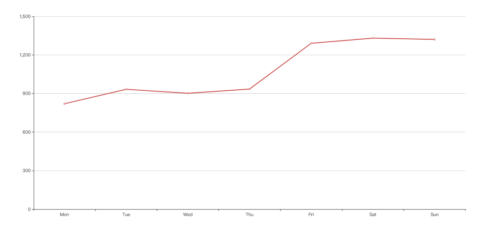
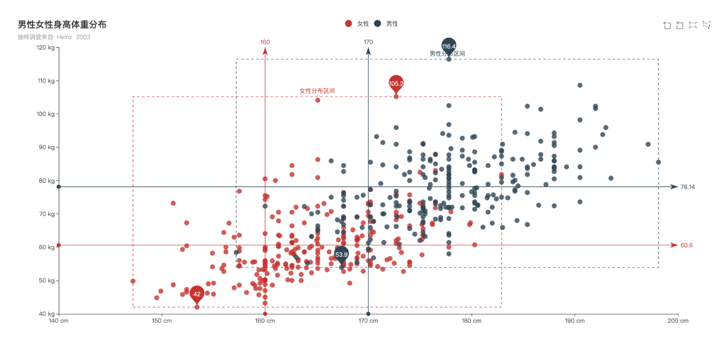
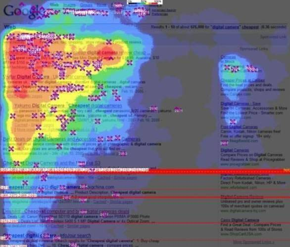
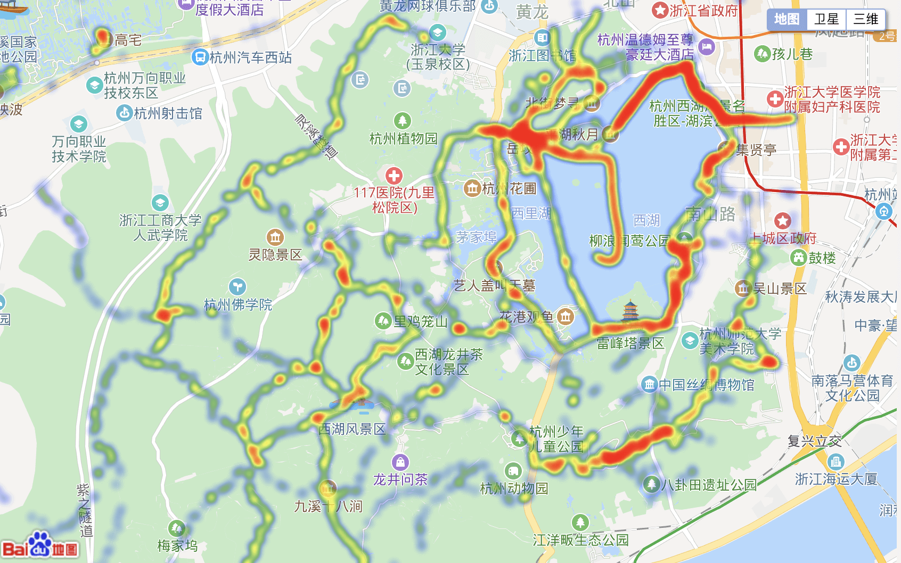
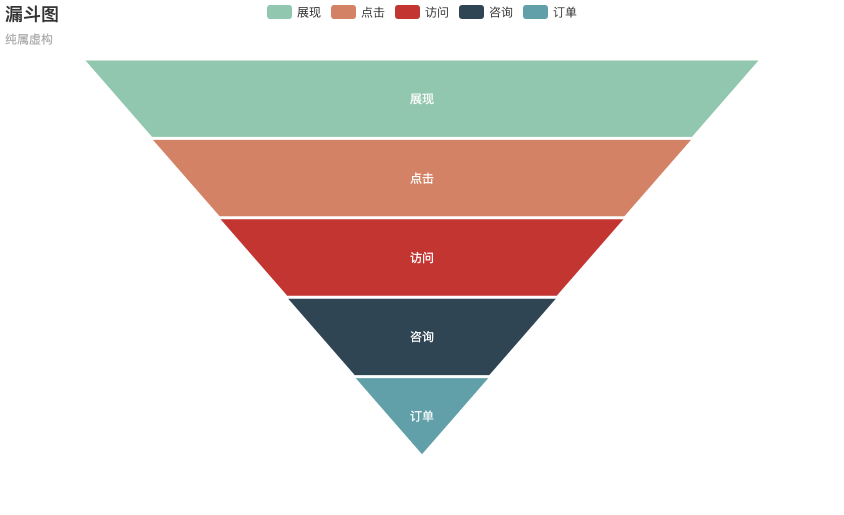

- 00 开篇词 为什么说每个软件工程师都应该懂大数据技术？.md.html
- 01 大数据技术发展史：大数据的前世今生.md.html
- 02 大数据应用发展史：从搜索引擎到人工智能.md.html
- 03 大数据应用领域：数据驱动一切.md.html
- 04 移动计算比移动数据更划算.md.html
- 05 从RAID看垂直伸缩到水平伸缩的演化.md.html
- 06 新技术层出不穷，HDFS依然是存储的王者.md.html
- 07 为什么说MapReduce既是编程模型又是计算框架？.md.html
- 08 MapReduce如何让数据完成一次旅行？.md.html
- 09 为什么我们管Yarn叫作资源调度框架？.md.html
- 10 模块答疑：我们能从Hadoop学到什么？.md.html
- 11 Hive是如何让MapReduce实现SQL操作的？.md.html
- 12 我们并没有觉得MapReduce速度慢，直到Spark出现.md.html
- 13 同样的本质，为何Spark可以更高效？.md.html
- 14 BigTable的开源实现：HBase.md.html
- 15 流式计算的代表：Storm、Flink、Spark Streaming.md.html
- 16 ZooKeeper是如何保证数据一致性的？.md.html
- 17 模块答疑：这么多技术，到底都能用在什么场景里？.md.html
- 18 如何自己开发一个大数据SQL引擎？.md.html
- 19 Spark的性能优化案例分析（上）.md.html
- 20 Spark的性能优化案例分析（下）.md.html
- 21 从阿里内部产品看海量数据处理系统的设计（上）：Doris的立项.md.html
- 22 从阿里内部产品看海量数据处理系统的设计（下）：架构与创新.md.html
- 23 大数据基准测试可以带来什么好处？.md.html
- 24 从大数据性能测试工具Dew看如何快速开发大数据系统.md.html
- 25 模块答疑：我能从大厂的大数据开发实践中学到什么？.md.html
- 26 互联网产品 + 大数据产品 = 大数据平台.md.html
- 27 大数据从哪里来？.md.html
- 28 知名大厂如何搭建大数据平台？.md.html
- 29 盘点可供中小企业参考的商业大数据平台.md.html
- 30 当大数据遇上物联网.md.html
- 31 模块答疑：为什么大数据平台至关重要？.md.html
- 32 互联网运营数据指标与可视化监控.md.html
- 33 一个电商网站订单下降的数据分析案例.md.html
- 34 A_B测试与灰度发布必知必会.md.html
- 35 如何利用大数据成为“增长黑客”？.md.html
- 36 模块答疑：为什么说数据驱动运营？.md.html
- 37 如何对数据进行分类和预测？.md.html
- 38 如何发掘数据之间的关系？.md.html
- 39 如何预测用户的喜好？.md.html
- 40 机器学习的数学原理是什么？.md.html
- 41 从感知机到神经网络算法.md.html
- 42 模块答疑：软件工程师如何进入人工智能领域？.md.html
- 所有的不确定都是机会——智慧写给你的新年寄语.md.html
- 第2季回归丨大数据之后，让我们回归后端.md.html
- 结束语 未来的你，有无限可能.md.html
- 捐赠
32 互联网运营数据指标与可视化监控
数据分析是大数据应用的一个主要场景，通过数据分析指标监控企业运营状态，及时调整运营和产品策略，是大数据技术的关键价值之一。互联网企业大数据平台上运行的绝大多数大数据计算都是关于数据分析的，各种统计、关联分析、汇总报告，都需要大数据平台来完成。
下面给你讲一个我曾经遇到过的真实案例。老板跟技术部说，我们要加强监控。技术部以为老板对程序运行监控不满意，这也是情理之中，当对技术人员说监控的时候，他们通常理解的监控就是程序运行期监控，包括操作系统监控和应用程序监控。所以技术部专门挖了做监控的专家，成立了监控运维开发团队，花了半年时间做了一个漂亮的技术运维监控系统。
老板看了以后大惊，这是什么？
你要的监控啊！
啊？
老板蒙掉了。
老板其实想要的是运营监控，就是我下面要列举的那些运营数据指标，他需要全面快速了解这些指标，以发现公司运营中出现的问题。而技术部却给了他一个监控系统响应时间、执行超时、CPU利用率的监控系统。
从公司角度看，运营数据是公司运行发展的管理基础，既可以通过运营数据了解公司目前发展的状况，又可以通过调节这些指标对公司进行管理，即数据驱动运营。
而运营数据的获得，需要在应用程序中大量埋点采集数据，从数据库、日志和其他第三方采集数据，对数据清洗、转换、存储，利用SQL进行数据统计、汇总、分析，才能最后得到需要的运营数据报告。而这一切，都需要大数据平台的支持。
互联网运营常用数据指标
不同的互联网行业关注不同的运营数据，细化来看，复杂的互联网产品关注的运营指标成百上千。但是有一些指标是我们最常用的，这些指标基本反映了运营的核心状态。
1. 新增用户数
新增用户数是网站增长性的关键指标，指新增加的访问网站的用户数（或者新下载App的用户数），对于一个处于爆发期的网站，新增用户数会在短期内出现倍增的走势，是网站的战略机遇期，很多大型网站都经历过一个甚至多个短期内用户暴增的阶段。新增用户数有日新增用户数、周新增用户数、月新增用户数等几种统计口径。
2. 用户留存率
新增的用户并不一定总是对网站（App）满意，在使用网站（App）后感到不满意，可能会注销账户（卸载App），这些辛苦获取来的用户就流失掉了。网站把经过一段时间依然没有流失的用户称作留存用户，留存用户数比当期新增用户数就是用户留存率。
用户留存率 = 留存用户数 / 当期新增用户数
计算留存有时间窗口，即和当期数据比，3天前新增用户留存的，称作3日留存；相应的，还有5日留存、7日留存等。新增用户可以通过广告、促销、病毒营销等手段获取，但是要让用户留下来，就必须要使产品有实打实的价值。用户留存率是反映用户体验和产品价值的一个重要指标，一般说来，3日留存率能做到40%以上就算不错了。和用户留存率对应的是用户流失率。
用户流失率 = 1 - 用户留存率
3. 活跃用户数
用户下载注册，但是很少打开产品，表示产品缺乏黏性和吸引力。活跃用户数表示打开使用产品的用户数，根据统计口径不同，有日活跃用户数、月活跃用户数等。提升活跃是网站运营的重要目标，各类App常用推送优惠促销消息给用户的手段促使用户打开产品。
4. PV
打开产品就算活跃，打开以后是否频繁操作，就用PV这个指标衡量，用户每次点击，每个页面跳转，被称为一个PV（Page View）。PV是网页访问统计的重要指标，在移动App上，需要进行一些变通来进行统计。
5. GMV
GMV即成交总金额（Gross Merchandise Volume），是电商网站统计营业额（流水）、反映网站营收能力的重要指标。和GMV配合使用的还有订单量（用户下单总量）、客单价（单个订单的平均价格）等。
6. 转化率
转化率是指在电商网站产生购买行为的用户与访问用户之比。
转化率 = 有购买行为的用户数 / 总访问用户数
用户从进入网站（App）到最后购买成功，可能需要经过复杂的访问路径，每个环节都有可能会离开：进入首页想了想没什么要买的，然后离开；搜索结果看了看不想买，然后离开；进入商品详情页面，看看评价、看看图片、看看价格，然后离开；放入购物车后又想了想自己的钱包，然后离开；支付的时候发现不支持自己喜欢的支付方式，然后离开…一个用户从进入网站到支付，完成一笔真正的消费，中间会有很大概率流失，网站必须要想尽各种办法：个性化推荐、打折促销、免运费、送红包、分期支付，以留住用户，提高转化率。
以上是一些具有普适性的网站运营数据指标，具体到不同的网站根据自身特点，会有自己的指标。比如百度可能会关注“广告点击率”这样的指标，游戏公司可能会关注“付费玩家数”这样的指标。每个产品都应该根据自身特点寻找能够反映自身运营状况的数据指标。
为了便于分析决策，这些指标通常会以图表的方式展示，即数据可视化。
数据可视化图表与数据监控
数据以图表方式展示，可以更直观展示和发现数据的规律，互联网运营常用可视化图表有如下几种。
1. 折线图
折线图是用得最多的可视化图表之一，通常横轴为时间，用于展示在时间维度上的数据变化规律，正向指标（比如日活跃用户数）斜率向上，负向指标（比如用户流失率）斜率向下，都表示网站运营日趋良好，公司发展欣欣向荣。

2. 散点图
数据分析的时候，散点图可以有效帮助分析师快速发现数据分布上的规律与趋势，可谓肉眼聚类算法。

3. 热力图
热力图用以分析网站页面被用户访问的热点区域，以更好进行页面布局和视觉展示。

在地图上展示的热力图则表示了该地区的拥堵和聚集状态，方便用户进行出行规划。

4. 漏斗图
漏斗图可谓是网站数据分析中最重要的图表，表示在用户的整个访问路径中每一步的转化率。当重要的营收指标（GMV、利润、订单量）发生异常的时候，就必须要对整个的漏斗图进行分析，判断是网站的入口流量发生了问题，还是中间某一步的转化发生了问题；是内容的问题还是系统的问题，需要逐个进行分析排查。除了发现提升网站运营效率的关键点与方法，分析找出异常问题的根源也是数据分析最重要的工作之一。

此外还有柱状图、饼图等，也经常用于数据分析和展示。可视化图形在数据分析时可以帮助分析师更准确、更快速做出趋势预判并发现问题，在汇报工作时使用图表更有说服力，决策时也更有依据和信心。俗话说得好，“一图胜千言”，多掌握一些图表技巧可以使工作中很多事情事半功倍。
以上示例用的图表都来自于ECharts。ECharts百度开源的一个前端可视化图表组件，使用这个组件，只需要几行代码，就可以将运营数据以炫酷的方式可视化展示出来。
小结
大数据技术最终落地必须要为企业带来实际价值，数据分析是其中最主要的应用场景之一。分析结果是最终的成果展示，在此之前，数据的采集、清洗、转换、存储、计算、分析，需要大量的工作。既然已经做了这么多工作，如何将最终的工作成果包装得更加直观、有科技感，技术人员需要换位思考，从用户角度、非技术角度去思考，争取让自己的工作更得到认可，实现更大价值。
很多互联网公司都有监控大屏，一个目的是做展示用，在公司显眼的位置放一个大屏幕，显示主要的运营指标和实时的业务发生情况，给公众和参观者展示直观的公司商业运营情况。比如天猫每年双十一的时候，都会通过大屏幕直播实时购物数据。
监控大屏的另一个目标就是实时展示业务运营状况，让我们对自己的工作成绩一目了然。如果数据突然出现波动，相关人员也可以快速响应，排查是技术问题还是运营市场问题，实现快速分析、快速解决。
思考题
对于今天文章开头提到的案例，如果换作你，老板跟你说，我们需要一个更强大、快速的监控系统的时候，你该如何回应？
如果最后老板明确要的就是我们今天讨论的运营数据监控系统，你该如何推动这件事情的落实？
欢迎你点击“请朋友读”，把今天的文章分享给好友。也欢迎你写下自己的思考或疑问，与我和其他同学一起讨论。
© 2019 - 2023 Liangliang Lee. Powered by gin and hexo-theme-book.